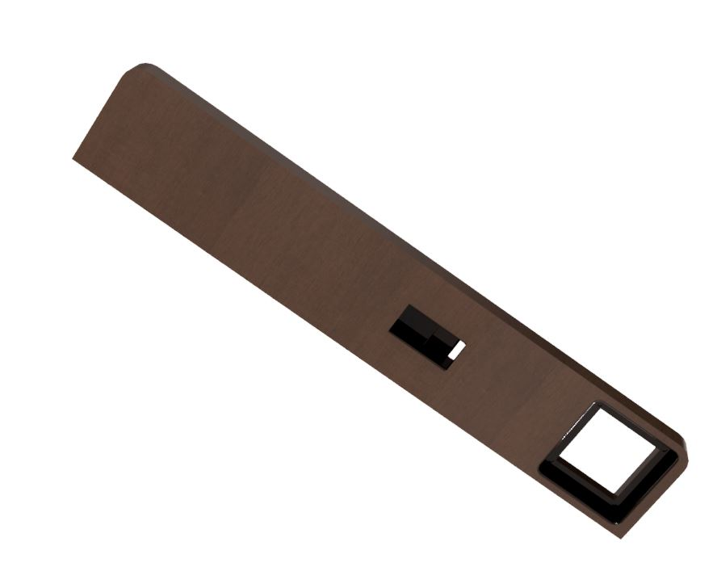

Our instructor told us that this project could be used as a part of the final project, before that I had a problem that needed a solution. So I used the opportunity and used this project as part of the final project and my own project.
As I have the most experience in the group with cnc milling I was in charge of the design and manufacturing of everything that had to be milled. A detailed explanation of my contribution can be found here by scrolling down to the final project section
The only electrical plugs around my bed are beneath the bed at very hard to reach areas or accross the room. My bed sits along side a radiator, but the radiator does not go all the way into the corner leaving some space between the wall and the bed. There is a nightstand on the other side of the bed that does not have any electrical plugs. Another problem that would be solved by having a small night stand in the space between the wall and the bed is that when watching a movie in bed with my girlfriend she could put her drink on the table.
As can be seen in the photo above the space is fairly small. It is around 550x90mm so that has to be taken into account when deciding what to put on the table. The features it must have are:
It is important that the table has at lease one electrical plug to charge a computer when watching a movie. I wanted to have wireless charging capabilities but with the available space it would not fit and I therefore went with a 3x usb hub from IKEA. Next I found a suitable electrical plug, I wanted everything to sit flush with the top of the table and decided to go with an electrical plug without a cover from Húsasmiðjan this plug takes up most of the horizontal space of the table so it would not be possible to have two side by side, but there could be more than one along the vertical axis. I decided to begind designing the table with one electrical plug and then change the design if I felt that another could be added.
Now the next step is to start drawing up the design in Autodesk Inventor. I decided to make the table 500x90 mm as the bed could be pushed up against the end of the table, but I wanted to have a little space on either end of the wall and radiator.
I then extruded the sketch to 20mm thickness. The next step is to add a cutout for the 3x usb hub, as the power cord for the hub is fixed I needed to make sure that it could be inserted into the table while not being loose during use. I cut out a slot slightly bigger than the given dimentions of the item and then cut out a small rectangle on one side underneath so the cable would fit.

Now I needed to create a cutout for the electrical plug. I could not find the dimentions online so I went out and bought one socket to make sure that it would fit perfectly. I then noted down the crutial dimentions and created a cutout for the head of the socket and the fastening plate.


After looking at the design I wanted to have the electrical plug by the edge and the usb hub closer to the center so I changed the design to this idea and I also added fillets along the edges.
Now the design is complete!
After talking with Arnar from FabLab about what material I could use for the table he told me tha there was some spare 23mm thick walnut that was used in another project that I could use for if I wanted. This is a very good looking wood so I imediately accepted the offer. Now before I can start machine the table on the cnc milling machine I need to create a file that the machine can read. As this design has some overhangs it can not be milled out completely with one operation, I will need to mill one side first, then flip the part over and mill the bottom side as well. To do this I will use the HSM/CAM add in for Inventor. First the setup folder is created and these settings are used for the top of the table:
Now the setup is complete, the next step is to define the tool that will be used.
To clear out the holes for the electrical plug and the usb hub, the 3D pocket strategy is used.

After simulating this strategy this is how the part will look
Now the same is done for the bottom side. The steps are the same as for the top side so I will not show them but after simulating this is the result.
To finish off I need to cut the outer perimeter out of the stock, this was done with the 2D contour strategy using multiple depths to cut all the way through.
I exported these files as two files, top toolpath and bottom toolpath, this add in features support for the shopbot milling machines that FabLab Reykjavík has so exporting is very easy.
Now that everything is ready I headed up to FabLab to cut it out. I found the cutter that I had specified in Inventor and put it into the holder.
Unfortunately I forgot to take photos of the process of the machine cutting as I was also teaching some of the new members of Team Spark how to use the machine safely. I did however take some photos of the outcome. When the part came out the right corners were rounded as the cutter is circular and cannot cut a perfect right corner, this was easily fixed with some files. The machine also did not cut out the middle of the cutout for the usb hub, I am not sure why it did not cut out the middle but it was okay as I used a chisle to break it off. As the stock I was using was scrap from another project I did not notice some fastening holes in the stock that ended up being on the edge of the table and does not look good. It is okay however as the edge is completly hidden by the bed and this will therefore not be seen.
I tried putting both the electrical plug and usb hub into their sockets and used the file to remove material from the corners until it fit perfectly.
Next I spoke to Arnar and asked if he had any experience with wood finishes, he told me that the person that used this wood in the previous project used teak oil to finish the wood and it came out very nice so I did the same. After putting some oil onto some paper towels I coated the entire table in it and it looks extremely nice!

I then went to Byko to pick up two angle irons to fasten the table to the wall. The finished project came out so much better than I had hoped for and will come very much in handy.
| Time | Work |
|---|---|
| 1 Hour | Drawing in Inventor. |
| 1.5 Hours | Creating the CNC files. |
| 2 Hours | CNC milling |
| 1 Hour | Hand finishing and fitting the electricals. |
| 1.5 Hours | Fastening the table to the wall |
| 3 Hours | Updating the website |
| 10 Hours | Total time |
Electrical socket size - Fastening electrical plugs - USB hubs - USB hub with electrical socket - Hardwood cnc feeds and speeds